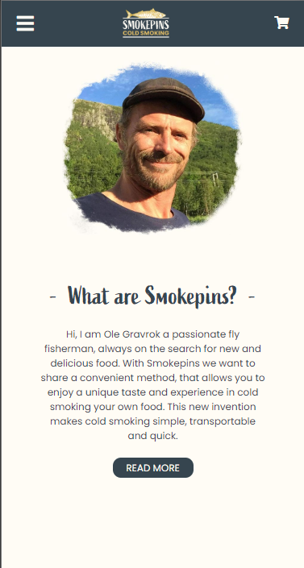
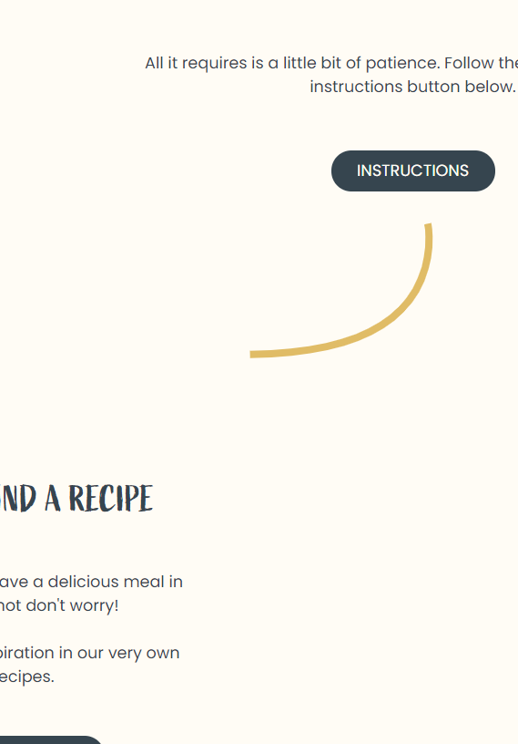

Project description
Smokepins is a small company that focuses mainly on products for passionate fishermans and food enthusiasts. Their best product is called 'smokepins' which is small tube that makes process of somking food much easier and convinient. Me and my group reached to them during our exam project to work on their case, and our job was to completly rethink and redesign their website and business model
Purpose
Our task was to adjust their approach to clients and their visual identity in which their were lacking badly. We knew that they are a small company that is producing their product by their own hands and that what we wanted to embrace on their website this welcoming and friendly approach to the client.
Features
To improve UX while reading step by step guide we added the animation which work like progress bar on scroll. It made reading through the blocks of text more pleasing
Smokepins are all about their custommers they don't want to just sell they want to maintain the relation that they have with their clients. That's why they are consatnly posting new articles for their clients in which they answer some of the problems that the clients might have. Some of the article also encourage to go out and explore the nature. The problem is when this massive amount of knowledge is not sorted that's why we implemented gallery in which users can chose the category they want to dive in and go to certain article